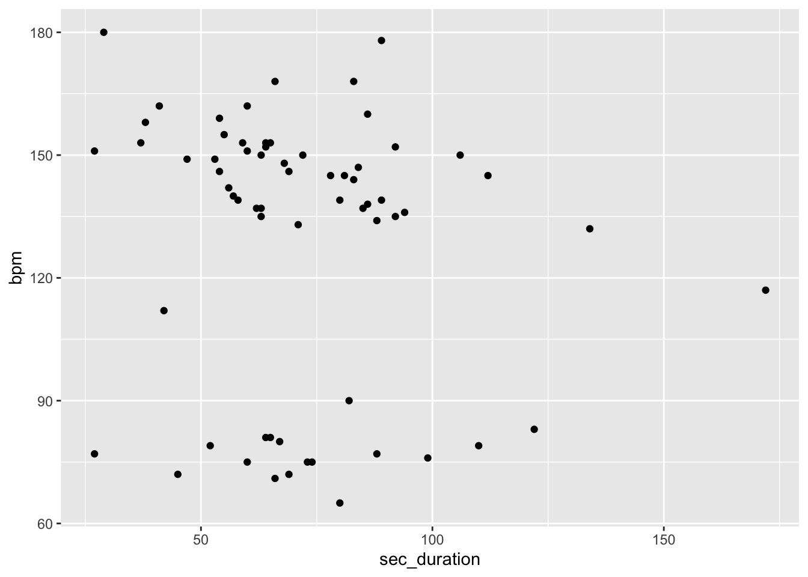

Problem Set 5
Recreate a Graph
There are many types of visualizations you can explore with ggplot. Sometimes the most difficult part is choosing the type of graph and designing a layout that will best communicate your thoughts. A great place to find inspiration is by looking at visualizations from other sources.
For instance, we heard from Neil Paine earlier this week. Neil is a writer for Five Thirty Eight, a leader in “data journalism” for sports and politics. Many organizations like these have seperate teams of visualization experts who work on designing and coding graphics for popular articles.
Let’s try to recreate one of Neil’s graphics from his article on the top fight songs of college teams. Start by reading Neil’s original article. Then, download the data file used to make this article from its GitHub page
> file_from_git<-'https://raw.githubusercontent.com/fivethirtyeight/data/master/fight-songs/fight-songs.csv'
> data<-read.csv(file_from_git)The data contains information on fight songs from all schools in the ACC, the Big Ten, the Big 12, Pac-12, and SEC, plus Notre Dame. Start by inspecting the structure of the dataset using the str() function. It is important to identify the "type of each variable as you create graphics. In this case, the two variables that we will be using as the x and the y axis , the duration and bpm, are already identified as integer variables.
> str(data)
'data.frame': 65 obs. of 23 variables:
$ school : chr "Notre Dame" "Baylor" "Iowa State" "Kansas" ...
$ conference : chr "Independent" "Big 12" "Big 12" "Big 12" ...
$ song_name : chr "Victory March" "Old Fight" "Iowa State Fights" "I'm a Jayhawk" ...
$ writers : chr "Michael J. Shea and John F. Shea" "Dick Baker and Frank Boggs" "Jack Barker, Manly Rice, Paul Gnam, Rosalind K. Cook" "George \"Dumpy\" Bowles" ...
$ year : chr "1908" "1947" "1930" "1912" ...
$ student_writer : chr "No" "Yes" "Yes" "Yes" ...
$ official_song : chr "Yes" "Yes" "Yes" "Yes" ...
$ contest : chr "No" "No" "No" "No" ...
$ bpm : int 152 76 155 137 80 153 180 81 149 159 ...
$ sec_duration : int 64 99 55 62 67 37 29 65 47 54 ...
$ fight : chr "Yes" "Yes" "Yes" "No" ...
$ number_fights : int 1 4 5 0 6 0 5 17 2 8 ...
$ victory : chr "Yes" "Yes" "No" "No" ...
$ win_won : chr "Yes" "Yes" "No" "No" ...
$ victory_win_won: chr "Yes" "Yes" "No" "No" ...
$ rah : chr "Yes" "No" "Yes" "No" ...
$ nonsense : chr "No" "No" "No" "Yes" ...
$ colors : chr "Yes" "Yes" "No" "No" ...
$ men : chr "Yes" "No" "Yes" "Yes" ...
$ opponents : chr "No" "No" "No" "Yes" ...
$ spelling : chr "No" "Yes" "Yes" "No" ...
$ trope_count : int 6 5 4 3 3 2 4 4 6 3 ...
$ spotify_id : chr "15a3ShKX3XWKzq0lSS48yr" "2ZsaI0Cu4nz8DHfBkPt0Dl" "3yyfoOXZQCtR6pfRJqu9pl" "0JzbjZgcjugS0dmPjF9R89" ...To visualize the data, use a geom point and place your x and y axes on the graph.

Next, color by school name.
> library(ggplot2)
> ggplot(data, aes(x = sec_duration, y = bpm, color = school)) +
+ geom_point() +
+ theme(legend.position = "none")
Use ggplot arguments to make the following changes to the graph to recreate Neil’s original graph:
- Use alpha and size arguments to match the original graph.
- Add a title, x label, and y label that match the labels on the original graph
- Add a black point to the graph to mark Notre Dame
- Label the Notre Dame point with text
- Use geom_vline and geom_hline to create an axis at the x and y intercept for the averages
Make it Interactive
You may have noticed a lot more interactive data visualization pieces on the internet over the last few years. The goal of these graphics is to allow the user to explore specific parts of the data and increase engagement. The COVID-19 Dashboard put together by the Center for Systems Science and Engineering at Johns Hopkins University is a good example.
Plotly is one package that can be used in R to make interactive visualizations. Once you have your graph saved as a new object, install the plotly package and run the functin (ggplotly) on the graph in order to add interactive elements.
Work with new data to create a graph
Choose from the plots on Five Thirty Eight and recreate a graph using ggplot. Try to match the style and format of the graph, or use new tools like plotly to make the graph interactive. Perhaps you find a graph that you think would be better visualized in anothe way. See if you can use the data to think of a better approach.
You can find data and code behind some of the articles here.
Alternatively, you can work with the graph I have recreated from this article on Fatal Collisions. See if you can turn this into a stacked bar chart and replicate the other graphs in the article. The GitHub with data can be found here.
>
> #load data
> drivers<-'https://raw.githubusercontent.com/fivethirtyeight/data/master/bad-drivers/bad-drivers.csv'
> data<-read.csv(drivers)
>
> #rename columns
> names(data)[names(data) ==
+ "Number.of.drivers.involved.in.fatal.collisions.per.billion.miles"] <- "Total Collisions"
> names(data)[names(data) ==
+ "Percentage.Of.Drivers.Involved.In.Fatal.Collisions.Who.Were.Not.Distracted"] <- 'Non Distracted'
>
> #mutate data
> data <- data %>%
+ mutate("Non_Distracted_Per" = (`Non Distracted`/100) * `Total Collisions`) %>%
+ arrange((State))
>
> #plot data
> ggplot(data = data, aes(x = as.factor(State), y = Non_Distracted_Per)) +
+ geom_bar(stat = "identity", fill = "orange") +
+ coord_flip() +
+ theme_minimal() +
+ labs(title = "Drivers Involved in Fatal...",
+ caption = "As a share of the number of fatal
+ collisions per billions of...") +
+ theme(axis.title.x = element_blank()) +
+ theme(axis.title.y = element_blank())